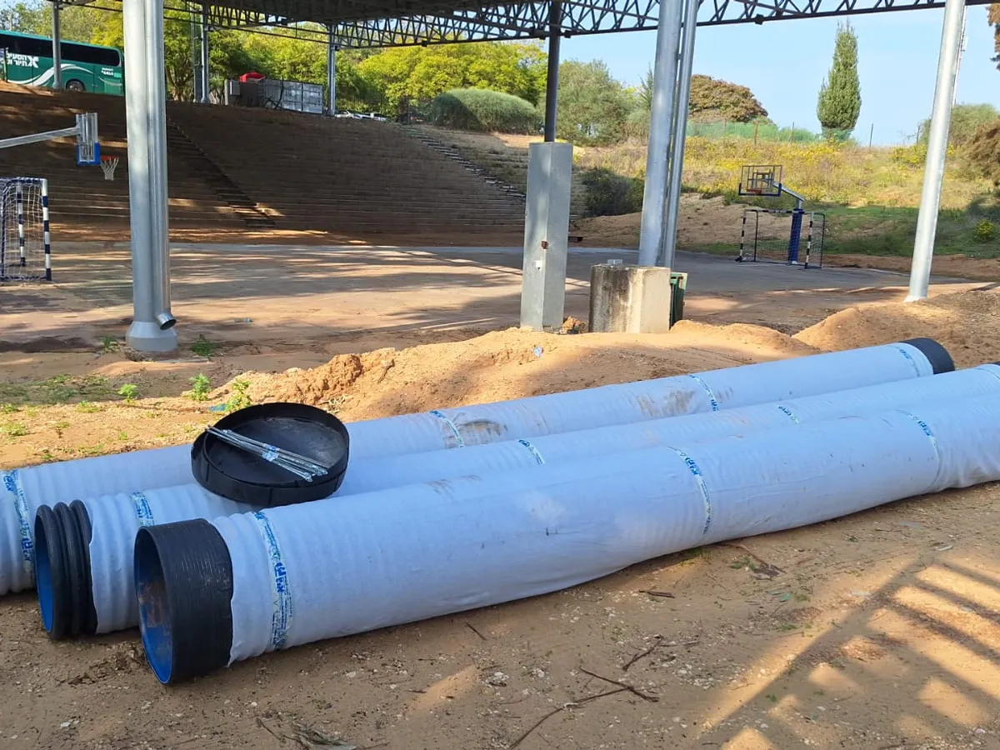
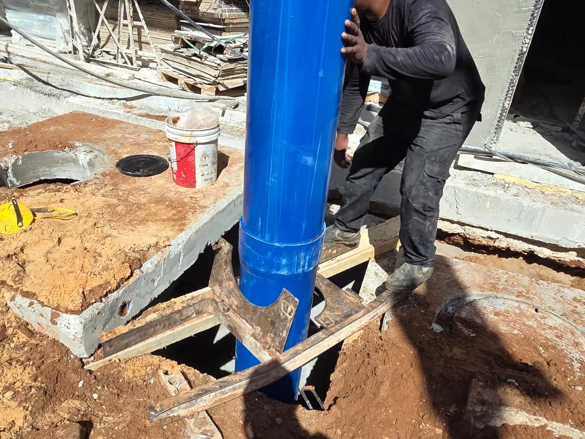
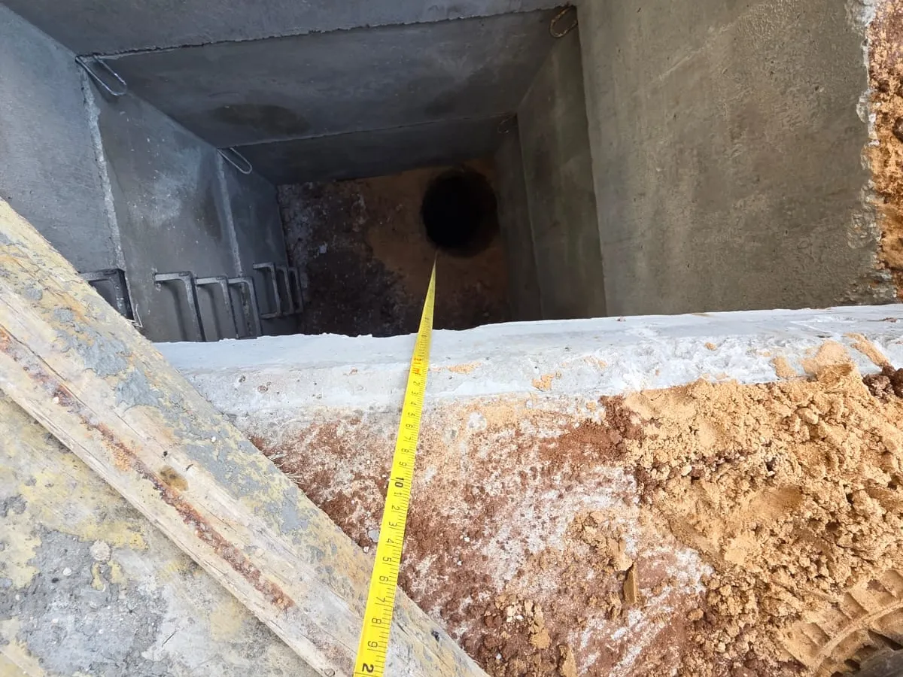
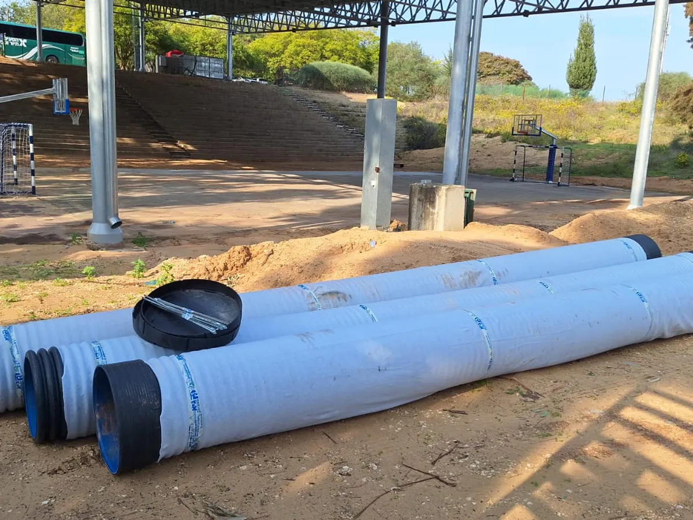
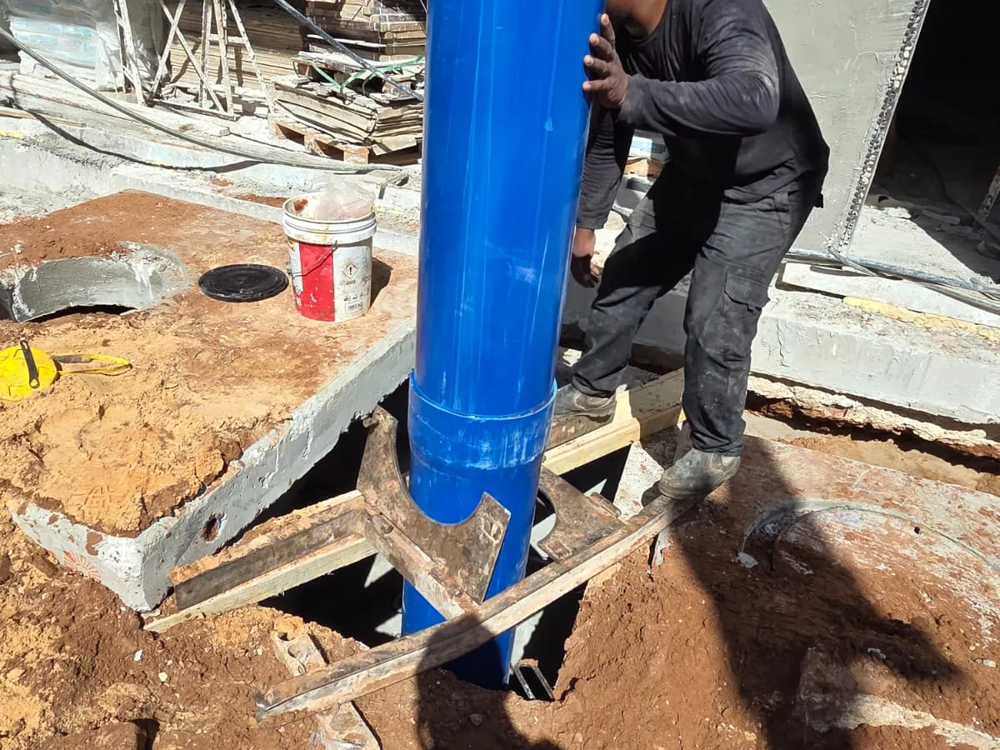
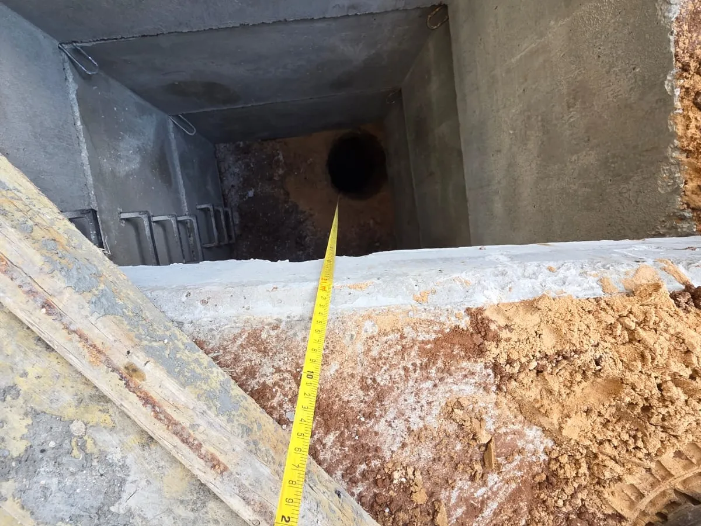

מה זה בור חלחול ומתי צריך אחד?
בור חלחול הוא מתקן תת-קרקעי המיועד לניקוז מי גשמים ונגר עילי בחזרה לקרקע בצורה מבוקרת. הוא מונע הצפות, נזקי מים ליסודות מבנים ושחיקת קרקע. על פי חוק, ברוב הפרויקטים החדשים נדרש פתרון ניקוז מאושר – ובור חלחול הוא הפתרון הנפוץ ביותר.
ההבדל בין בור חלחול, בור ספיגה ובור החדרה
- בור חלחול – לניקוז מי גשמים ונגר עילי, נפוץ בפרויקטים מגוריים ומסחריים
- בור ספיגה – לכמויות מים קטנות, מתאים לבתים פרטיים ווילות
- בור החדרה – להחדרת מים לשכבות קרקע עמוקות, באזורים תעשייתיים וחקלאיים
 




